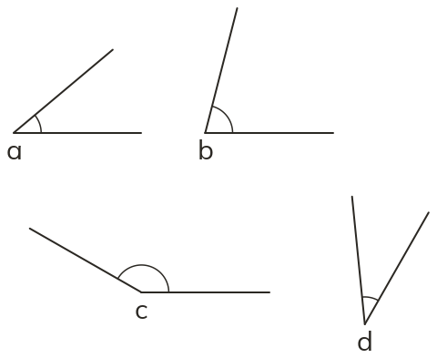
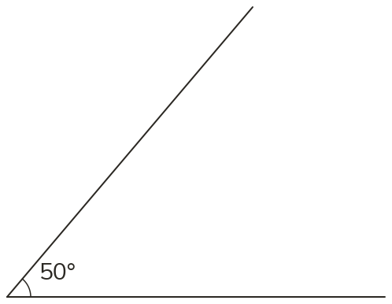
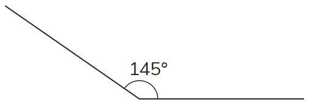
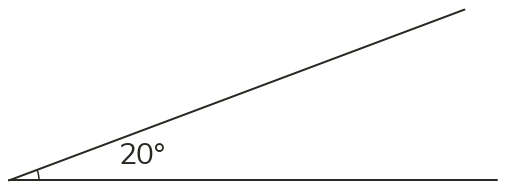
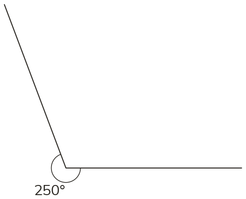

Westonbirt Maths · Measuring and Calculating Angles
Measuring and Naming Angles
Name: ______________________ Date: ____________
1
Estimate, then measure, angles a, b, c and d.
2
Draw an angle of 50°.
3
Draw an angle of 145°.
4
Draw an angle of 20°.
Ext
Draw a reflex angle of 250°.




